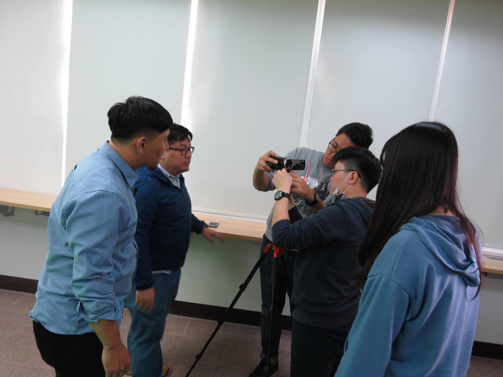

社群簡介
創新教學內容亮點
經驗分享
本社群工坊計畫以畢業製作與商品攝影兩門課做為社群課程設計之主體，並邀
請外校專家進行講座，甫以課程實作演練使學生能夠對作業內容有更深刻的了
解。除此之外，透過兩堂課所衍生出之教材內容:「商業影片腳本基本技巧」與
「商業攝影基本技巧」，能夠讓參與修課的學生對於專業領域的掌握度更加提
升，也能對實務面向的實際內容有更多的認知與了解。另外，亦透過社群計畫
所安排之每週課程，讓學生逐步熟悉、掌握課程內容，並且能夠於課程結束後
應用在實務面上，並不僅是於就學期間之學習，而是能過對日後就業能力有所幫助。

教學目標